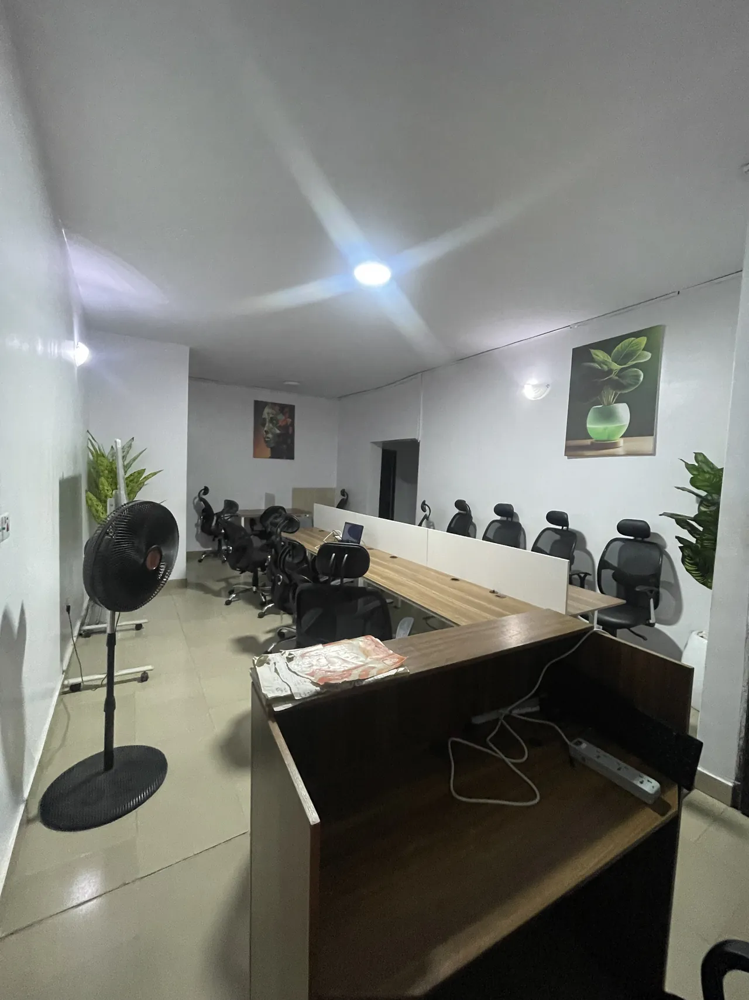
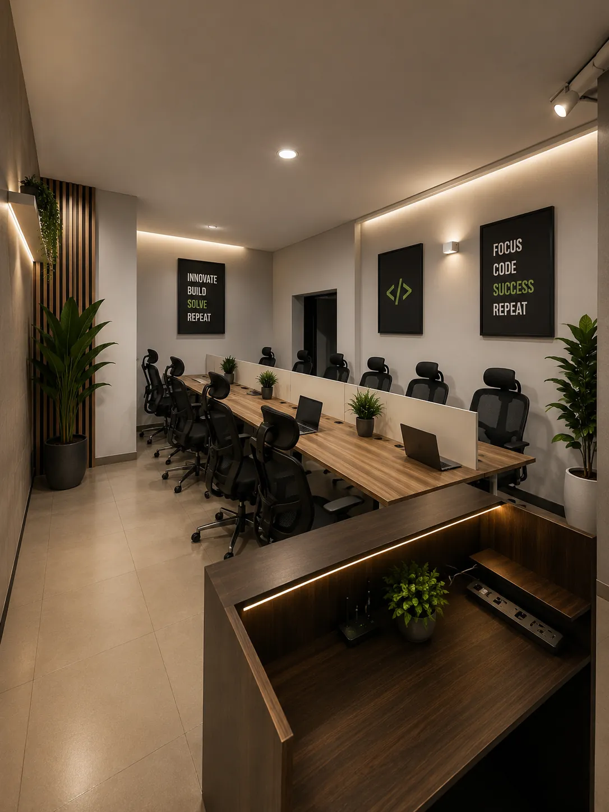
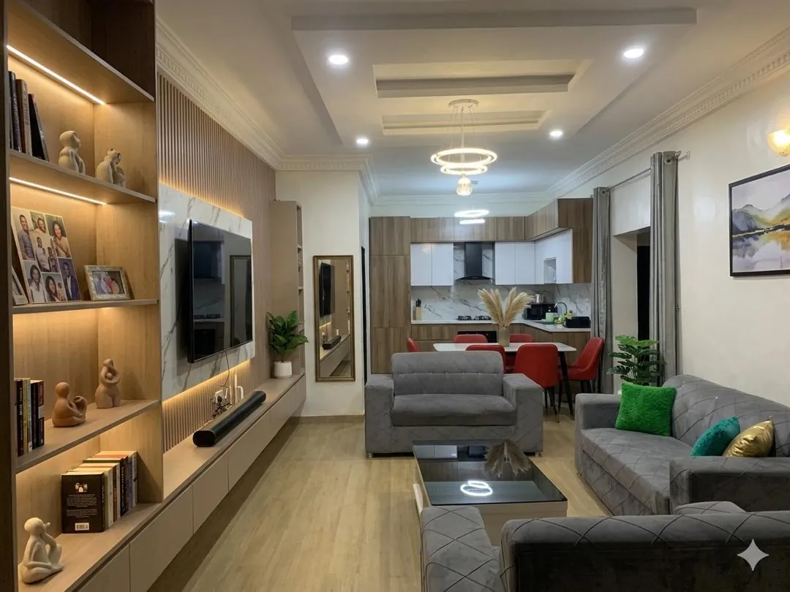
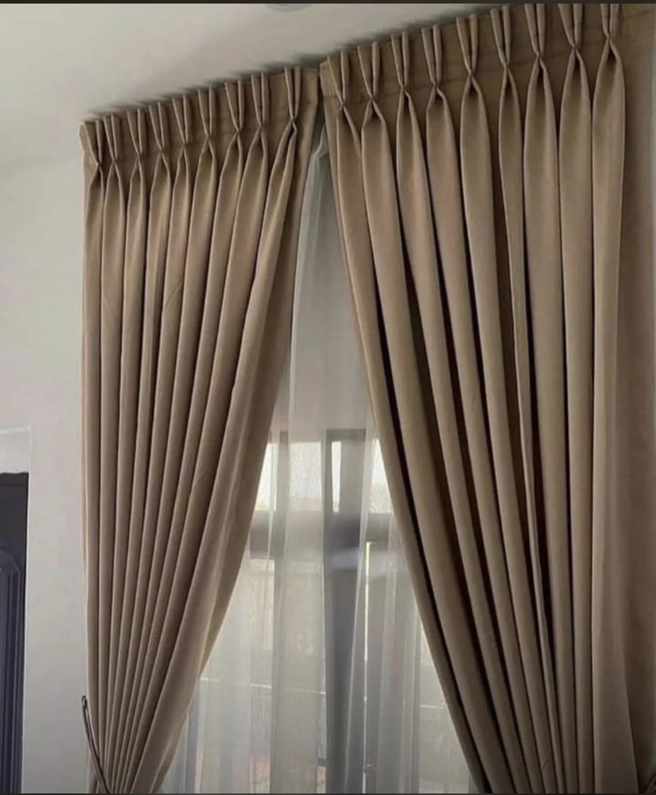

BeforeAfterNAJKAD · Interior Decoration · Est. 2015
Thoughtfully curated interiors, personalised styling and décor solutions for homes and businesses.
Beautifying spaces, elevating lifestyles

About NAJKAD
Every space tells a story. The way it feels, the details it holds and the people who bring it to life.
Since 2015, NAJKAD has been helping individuals and businesses shape their spaces through thoughtful interior decoration, carefully selected furnishings and personalised styling.
From a single room that needs a fresh perspective to an entire environment ready for transformation, we bring together colour, texture, furnishings and detail to create spaces that feel considered, comfortable and distinctly personal.
Services & Offerings
Five categories, fifteen offerings. Choose a category to see what we do and the work behind it.
Selected Projects & Transformations
A collection of interiors, installations and transformations shaped by individual tastes, practical needs and an eye for detail.


BeforeAfter
The NAJKAD Difference
No two spaces are exactly alike, and neither are the people who inhabit them. At NAJKAD, we take the time to understand what matters to you, bringing together the right products, ideas and finishing details to suit your space, preferences and budget.
Understanding individual needs, preferences and vision.
Solutions that take different budgets and requirements into consideration.
Thoughtful attention to colours, textures, materials, arrangements and finishing.
Product supply alongside installation and fitting services.
Who We Create For
From private residences to professional and hospitality environments, NAJKAD works with individuals and businesses looking to make their spaces more beautiful, comfortable and functional.
Contact & Enquiries
Have a space in mind or a décor idea you’d love to explore? Get in touch with NAJKAD and let’s talk about how we can bring it to life.
Let’s Talk on WhatsAppBased in Lagos, Nigeria. Serving clients worldwide through interior decoration, installation services and product supply.
Interior decoration, home styling, office decoration, interior makeovers and consultation; curtain making and installation and window blinds; furniture supply, upholstery and installation; wallpaper installation and wall decoration; and rug, bedding and home accessory supply.
Yes. NAJKAD works with homes, offices and other commercial and hospitality environments.
Yes. Custom décor and personalised styling are part of what NAJKAD does, shaped around your space, preferences and budget.
Yes. Curtain making and installation sits alongside window blinds under Window Treatments.
NAJKAD is based in Lagos, Nigeria, and serves clients worldwide through its interior decoration, installation and product supply services.
Yes. Product supply and delivery are available worldwide. Please message us to discuss your location.
The quickest way is WhatsApp on 09027450918. You can also call 09027450918 or 08102480432, or email najkadinterior@yahoo.com.